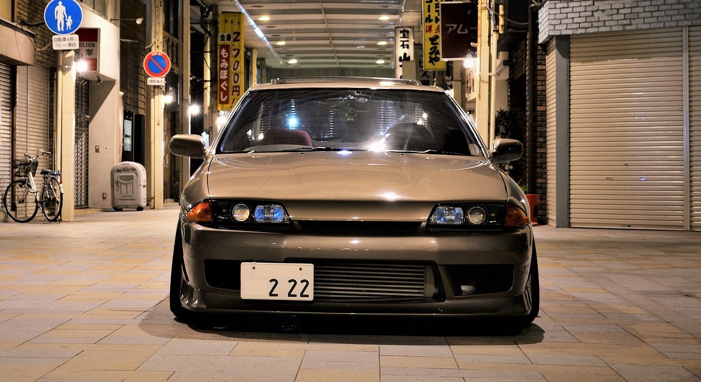
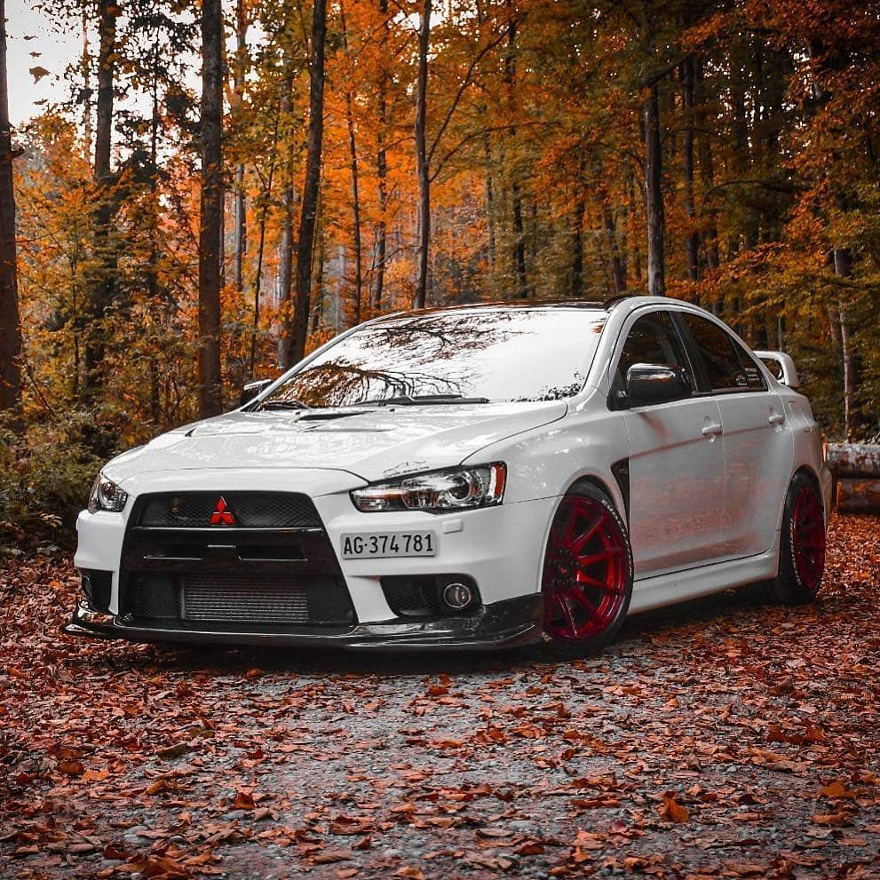

JDM (Japanese Domestic Market) automobily jsou japonské automobily, které byly určeny původně pro japonský trh. Tyto automobily se vyznačují vysokou kvalitou, výkonem a inovativními technologiemi. JDM automobily se staly symbolem japonského automobilového průmyslu a zároveň představují jedinečnou kulturu a historii Japonska. JDM automobily se staly velmi populárními mezi fanoušky automobilů po celém světě kvůli svému výkonu, stylovému vzhledu a jedinečným technologiím. Tyto automobily jsou oblíbené mezi tunningovými nadšenci, kteří si je upravují a personalizují podle svých představ. JDM automobily se staly neoddělitelnou součástí automobilového světa a jsou nadále jedním z nejpopulárnějších a nejrespektovanějších typů automobilů na trhu.
 Japonský automobilový trh je plný skvělých modelů, ale některé z nich se staly výjimečnými a velmi oblíbenými mezi fanoušky JDM. Zde je seznam některých z nejpopulárnějších modelů JDM:
Japonský automobilový průmysl se rozvinul po 2. světové válce a brzy se stal jedním z nejvýznamnějších na světě. JDM automobily se objevily jako jedna z prvních značek japonských automobilů a rychle se staly populárními kvůli své kvalitě a výkonu. V 60. a 70. letech se JDM automobily staly významnými na mezinárodním trhu a v 80. a 90. letech se staly jednou z nejpopulárnějších značek na světě. Tyto automobily byly vybaveny nejmodernějšími technologiemi a vyznačovaly se svým vysokým výkonem a kvalitou. JDM automobily se neustále vyvíjely a inovovaly, aby splňovaly požadavky trhu a zákazníků. Japonský automobilový průmysl byl známý svou schopností vyvinout automobily, které byly jednou výkonné a ekologické zároveň. Tyto automobily byly považovány za jedny z nejlepších na trhu a získaly si velkou oblibu mezi fanoušky automobilů po celém světě. V novějších letech se JDM automobily staly kultovními a jsou považovány za jedny z nejlepších sportovních a tunningových automobilů na trhu. Tyto automobily se staly symbolem japonského automobilového průmyslu a zároveň představují jedinečnou kulturu a historii Japonska. JDM automobily se staly neoddělitelnou součástí automobilového světa a jsou nadále jedním z nejpopulárnějších a nejrespektovanějších typů automobilů na trhu.